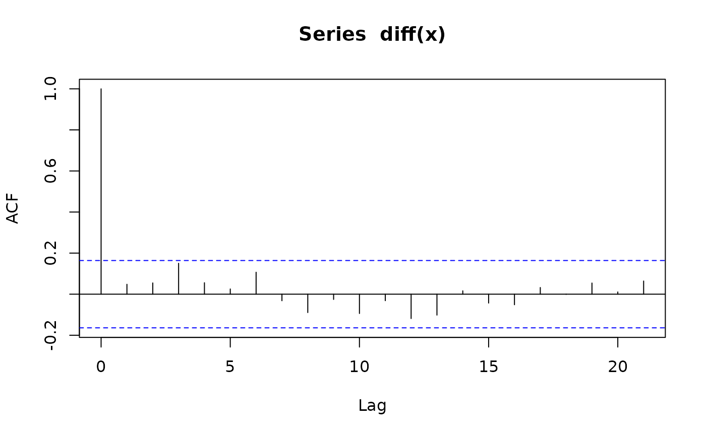
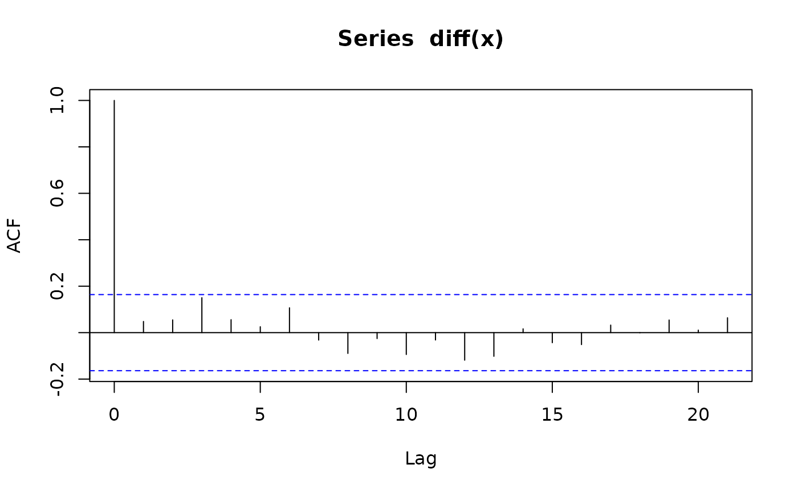
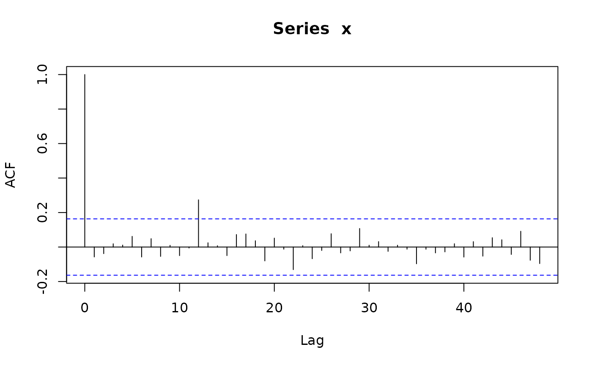
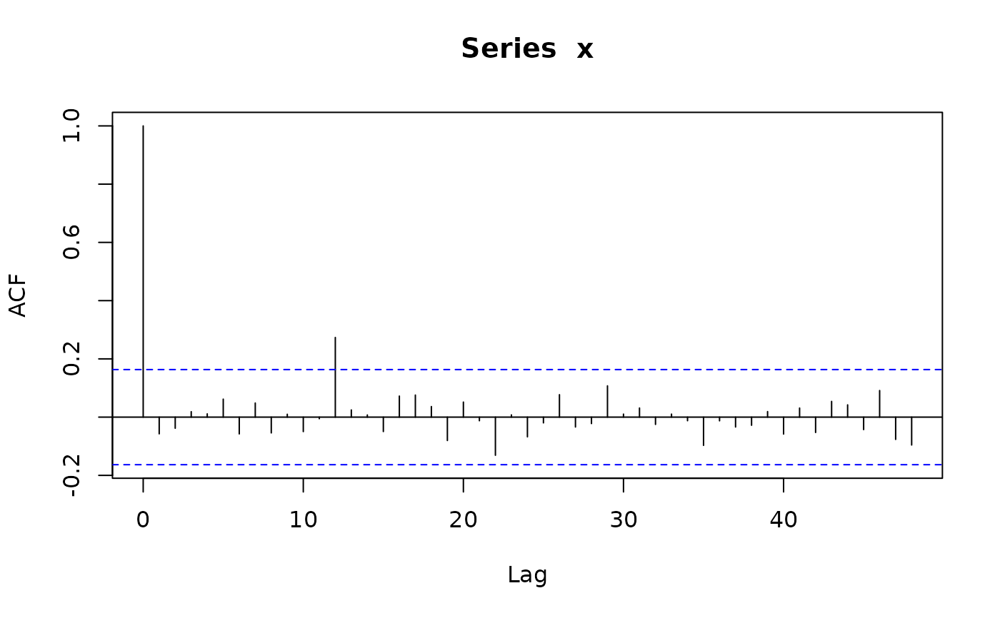

Simulate trajectories of seasonal arima models
sim_sarima.RdSimulate trajectories of seasonal arima models.
Usage
sim_sarima(model, n = NA, rand.gen = rnorm, n.start = NA, x, eps,
xcenter = NULL, xintercept = NULL, ...)Arguments
- model
specification of the model, a list, see `Details'.
- rand.gen
random number generator for the innovations.
- n
length of the time series.
- n.start
number of burn-in observations.
- x
initial/before values of the time series, a list, a numeric vector or time series, see Details.
- eps
initial/before values of the innovations, a list or a numeric vector, see Details.
- xintercept
non-constant intercept which may represent trend or covariate effects.
- xcenter
currently ignored.
- ...
additional arguments for
arima.simandrand.gen, see `Details'.
Details
The model is specified by the argument "model" which is a list with
elements suitable to be passed to new("SarimaModel", ...), see
the description of class "SarimaModel". Here are some of the
possible components:
- nseasons
number of seasons in a year (or whatever is the larger time unit)
- iorder
order of differencing, specifies the factor \((1-B)^{d1}\) for the model.
- siorder
order of seasonal differencing, specifies the factor \((1-B^{period})^{ds}\) for the model.
- ar
ar parameters (non-seasonal)
- ma
ma parameters (non-seasonal)
- sar
seasonal ar parameters
- sma
seasonal ma parameters
Additional arguments for rand.gen may be specified
via the "..." argument.
In particular, the length of the generated series is specified with
argument n. Arguments for rand.gen can also be passed
via the "..." argument.
sim_sarima calls internally arima.sim to simulate the
ARMA part of the model. Then undifferences the result to obtain the
end result.
The function returns the simulated time series from the requested model.
Information about the model is printed on the screen if
info = "print". To suppress this, set info to any other
value.
For multple simulations with the same (or almost the same) setup, it is
better to execute prepareSimSarima once and call the
function returned by it as many times as needed.
Examples
require("PolynomF") # guaranteed to be available since package "sarima" imports it.
#> Loading required package: PolynomF
x <- sim_sarima(n=144, model = list(ma=0.8)) # MA(1)
x <- sim_sarima(n=144, model = list(ar=0.8)) # AR(1)
x <- sim_sarima(n=144, model = list(ar=c(rep(0,11),0.8))) # SAR(1), 12 seasons
x <- sim_sarima(n=144, model = list(ma=c(rep(0,11),0.8))) # SMA(1)
# more enlightened SAR(1) and SMA(1)
x <- sim_sarima(n=144,model=list(sar=0.8, nseasons=12, sigma2 = 1)) # SAR(1), 12 seasons
x <- sim_sarima(n=144,model=list(sma=0.8, nseasons=12, sigma2 = 1)) # SMA(1)
x <- sim_sarima(n=144, model = list(iorder=1, sigma2 = 1)) # (1-B)X_t = e_t (random walk)
acf(x)
 acf(diff(x))

x <- sim_sarima(n=144, model = list(iorder=2, sigma2 = 1)) # (1-B)^2 X_t = e_t
x <- sim_sarima(n=144, model = list(siorder=1,
nseasons=12, sigma2 = 1)) # (1-B)^{12} X_t = e_t
x <- sim_sarima(n=144, model = list(iorder=1, siorder=1,
nseasons=12, sigma2 = 1))
x <- sim_sarima(n=144, model = list(ma=0.4, iorder=1, siorder=1,
nseasons=12, sigma2 = 1))
x <- sim_sarima(n=144, model = list(ma=0.4, sma=0.7, iorder=1, siorder=1,
nseasons=12, sigma2 = 1))
x <- sim_sarima(n=144, model = list(ar=c(1.2,-0.8), ma=0.4,
sar=0.3, sma=0.7, iorder=1, siorder=1,
nseasons=12, sigma2 = 1))
x <- sim_sarima(n=144, model = list(iorder=1, siorder=1,
nseasons=12, sigma2 = 1),
x = list(init=AirPassengers[1:13]))
p <- polynom(c(1,-1.2,0.8))
solve(p)
#> [1] 0.75-0.8291562i 0.75+0.8291562i
abs(solve(p))
#> [1] 1.118034 1.118034
sim_sarima(n=144, model = list(ar=c(1.2,-0.8), ma=0.4, sar=0.3, sma=0.7,
iorder=1, siorder=1, nseasons=12))
#> [1] 0.000000 0.000000 0.000000 0.000000 0.000000 0.000000
#> [7] 0.000000 0.000000 0.000000 0.000000 0.000000 0.000000
#> [13] 0.000000 0.000000 0.000000 0.000000 0.000000 0.000000
#> [19] 0.000000 0.000000 0.000000 0.000000 0.000000 0.000000
#> [25] 0.000000 0.000000 0.000000 1.780214 3.372054 2.293678
#> [31] -3.047393 -9.684848 -14.562789 -17.782260 -19.912064 -21.872197
#> [37] -21.989561 -20.596876 -19.081282 -16.348192 -17.520056 -24.728079
#> [43] -37.526508 -47.019445 -52.265935 -56.339532 -62.577997 -69.941865
#> [49] -70.773060 -65.544778 -57.624059 -51.378152 -56.626291 -73.495670
#> [55] -96.019578 -109.849155 -115.724228 -118.309959 -123.061393 -130.107816
#> [61] -129.946439 -123.798251 -114.021569 -105.892821 -110.781266 -128.762677
#> [67] -152.407785 -168.690859 -180.178949 -188.685526 -195.808150 -200.333755
#> [73] -192.994937 -180.580656 -170.657679 -166.852944 -176.360298 -195.383930
#> [79] -217.543272 -234.087995 -250.263544 -264.471103 -275.370811 -280.054430
#> [85] -268.531057 -252.736089 -243.860883 -243.434098 -254.848981 -272.852169
#> [91] -294.528644 -315.100538 -338.145093 -356.226045 -365.764994 -365.677953
#> [97] -348.868739 -330.814215 -324.052742 -326.521893 -337.102563 -352.758926
#> [103] -375.285524 -402.206095 -431.306121 -450.475684 -454.770588 -445.222081
#> [109] -419.255440 -396.441978 -390.908941 -398.533397 -413.771026 -432.455399
#> [115] -457.246556 -485.839936 -512.754808 -525.746962 -520.815693 -502.469743
#> [121] -468.650430 -444.244462 -442.247016 -453.833345 -469.269519 -484.268547
#> [127] -504.519325 -529.495562 -554.456436 -566.941227 -561.659183 -543.353466
#> [133] -506.663391 -480.425029 -478.624305 -491.049765 -504.317324 -512.555677
#> [139] -523.851079 -543.402696 -567.461689 -581.898586 -579.276079 -562.949518
x <- sim_sarima(n=144, model=list(ma=0.4, iorder=1, siorder=1, nseasons=12))
acf(x, lag.max=48)
acf(diff(x))

x <- sim_sarima(n=144, model = list(iorder=2, sigma2 = 1)) # (1-B)^2 X_t = e_t
x <- sim_sarima(n=144, model = list(siorder=1,
nseasons=12, sigma2 = 1)) # (1-B)^{12} X_t = e_t
x <- sim_sarima(n=144, model = list(iorder=1, siorder=1,
nseasons=12, sigma2 = 1))
x <- sim_sarima(n=144, model = list(ma=0.4, iorder=1, siorder=1,
nseasons=12, sigma2 = 1))
x <- sim_sarima(n=144, model = list(ma=0.4, sma=0.7, iorder=1, siorder=1,
nseasons=12, sigma2 = 1))
x <- sim_sarima(n=144, model = list(ar=c(1.2,-0.8), ma=0.4,
sar=0.3, sma=0.7, iorder=1, siorder=1,
nseasons=12, sigma2 = 1))
x <- sim_sarima(n=144, model = list(iorder=1, siorder=1,
nseasons=12, sigma2 = 1),
x = list(init=AirPassengers[1:13]))
p <- polynom(c(1,-1.2,0.8))
solve(p)
#> [1] 0.75-0.8291562i 0.75+0.8291562i
abs(solve(p))
#> [1] 1.118034 1.118034
sim_sarima(n=144, model = list(ar=c(1.2,-0.8), ma=0.4, sar=0.3, sma=0.7,
iorder=1, siorder=1, nseasons=12))
#> [1] 0.000000 0.000000 0.000000 0.000000 0.000000 0.000000
#> [7] 0.000000 0.000000 0.000000 0.000000 0.000000 0.000000
#> [13] 0.000000 0.000000 0.000000 0.000000 0.000000 0.000000
#> [19] 0.000000 0.000000 0.000000 0.000000 0.000000 0.000000
#> [25] 0.000000 0.000000 0.000000 1.780214 3.372054 2.293678
#> [31] -3.047393 -9.684848 -14.562789 -17.782260 -19.912064 -21.872197
#> [37] -21.989561 -20.596876 -19.081282 -16.348192 -17.520056 -24.728079
#> [43] -37.526508 -47.019445 -52.265935 -56.339532 -62.577997 -69.941865
#> [49] -70.773060 -65.544778 -57.624059 -51.378152 -56.626291 -73.495670
#> [55] -96.019578 -109.849155 -115.724228 -118.309959 -123.061393 -130.107816
#> [61] -129.946439 -123.798251 -114.021569 -105.892821 -110.781266 -128.762677
#> [67] -152.407785 -168.690859 -180.178949 -188.685526 -195.808150 -200.333755
#> [73] -192.994937 -180.580656 -170.657679 -166.852944 -176.360298 -195.383930
#> [79] -217.543272 -234.087995 -250.263544 -264.471103 -275.370811 -280.054430
#> [85] -268.531057 -252.736089 -243.860883 -243.434098 -254.848981 -272.852169
#> [91] -294.528644 -315.100538 -338.145093 -356.226045 -365.764994 -365.677953
#> [97] -348.868739 -330.814215 -324.052742 -326.521893 -337.102563 -352.758926
#> [103] -375.285524 -402.206095 -431.306121 -450.475684 -454.770588 -445.222081
#> [109] -419.255440 -396.441978 -390.908941 -398.533397 -413.771026 -432.455399
#> [115] -457.246556 -485.839936 -512.754808 -525.746962 -520.815693 -502.469743
#> [121] -468.650430 -444.244462 -442.247016 -453.833345 -469.269519 -484.268547
#> [127] -504.519325 -529.495562 -554.456436 -566.941227 -561.659183 -543.353466
#> [133] -506.663391 -480.425029 -478.624305 -491.049765 -504.317324 -512.555677
#> [139] -523.851079 -543.402696 -567.461689 -581.898586 -579.276079 -562.949518
x <- sim_sarima(n=144, model=list(ma=0.4, iorder=1, siorder=1, nseasons=12))
acf(x, lag.max=48)
 x <- sim_sarima(n=144, model=list(sma=0.4, iorder=1, siorder=1, nseasons=12))
acf(x, lag.max=48)
x <- sim_sarima(n=144, model=list(sma=0.4, iorder=1, siorder=1, nseasons=12))
acf(x, lag.max=48)
 x <- sim_sarima(n=144, model=list(sma=0.4, iorder=0, siorder=0, nseasons=12))
acf(x, lag.max=48)

x <- sim_sarima(n=144, model=list(sar=0.4, iorder=0, siorder=0, nseasons=12))
acf(x, lag.max=48)
x <- sim_sarima(n=144, model=list(sma=0.4, iorder=0, siorder=0, nseasons=12))
acf(x, lag.max=48)

x <- sim_sarima(n=144, model=list(sar=0.4, iorder=0, siorder=0, nseasons=12))
acf(x, lag.max=48)
 x <- sim_sarima(n=144, model=list(sar=-0.4, iorder=0, siorder=0, nseasons=12))
acf(x, lag.max=48)
x <- sim_sarima(n=144, model=list(sar=-0.4, iorder=0, siorder=0, nseasons=12))
acf(x, lag.max=48)
 x <- sim_sarima(n=144, model=list(ar=c(1.2, -0.8), ma=0.4, sar=0.3, sma=0.7,
iorder=1, siorder=1, nseasons=12))
## use xintercept to include arbitrary trend/covariates
sim_sarima(n = 144, model = list(sma = 0.4, ma = 0.4, sar = 0.8, ar = 0.5,
nseasons = 12, sigma2 = 1), xintercept = 1:144)
#> [1] 0.9227258 0.8718477 -1.5193627 -3.1567149 -1.5781022 0.2529611
#> [7] -0.4582207 -1.5508918 -1.8001520 0.8733367 2.1851386 0.9824627
#> [13] -0.5883503 13.5213627 21.2472996 23.9502576 27.0636955 29.4216565
#> [19] 32.4348095 34.2200517 38.0500916 42.2837116 45.1714722 45.3412473
#> [25] 45.0805826 58.2982976 69.7458824 75.6287199 79.5180533 82.9595452
#> [31] 86.9582326 89.9677408 95.0741130 99.3677664 102.9403237 104.5143845
#> [37] 107.3110684 120.6205458 133.5628713 140.3368630 143.3062986 149.0507048
#> [43] 154.5386085 158.7218711 165.8217662 169.4612273 173.6664684 177.5913683
#> [49] 182.1714167 194.1168179 206.9636740 215.6357843 219.1880106 223.8013124
#> [55] 230.2032896 236.8302698 245.2620266 249.8208401 254.2500871 258.6936578
#> [61] 264.4596210 277.2730365 289.3336012 300.3393370 306.0539563 307.5959994
#> [67] 313.8697862 322.3754582 331.3697612 338.4350846 343.3662825 347.5696476
#> [73] 354.3230354 369.2445273 380.4235761 392.0092474 398.7086718 399.3173226
#> [79] 407.6606857 416.5887608 425.6895152 430.7768872 435.8642029 440.8057502
#> [85] 449.8102705 465.8602419 476.1907224 487.5682352 494.6924050 498.3021427
#> [91] 507.5850486 514.6133433 524.1507813 530.6519484 537.3865694 541.1110323
#> [97] 551.2253531 567.8819968 576.7104267 588.5659981 594.5754098 599.0742602
#> [103] 609.3045313 616.3147854 626.4059147 633.3825966 640.5013264 647.0510572
#> [109] 659.0036974 674.0441245 680.6972190 691.9483703 699.5292313 705.1814514
#> [115] 714.1940441 723.0923409 731.8088096 737.5677013 746.5193625 755.0538980
#> [121] 768.0278946 782.6380310 787.3033927 799.3023744 808.7389592 814.6673460
#> [127] 823.7253000 834.4669544 841.0049612 847.7025404 857.7456493 865.6291564
#> [133] 878.4342063 892.1827468 896.9321651 907.9023605 916.0913862 924.1417298
#> [139] 934.3511123 945.2188090 951.9549687 960.2239731 968.5987805 976.1455512
x <- sim_sarima(n=144, model=list(ar=c(1.2, -0.8), ma=0.4, sar=0.3, sma=0.7,
iorder=1, siorder=1, nseasons=12))
## use xintercept to include arbitrary trend/covariates
sim_sarima(n = 144, model = list(sma = 0.4, ma = 0.4, sar = 0.8, ar = 0.5,
nseasons = 12, sigma2 = 1), xintercept = 1:144)
#> [1] 0.9227258 0.8718477 -1.5193627 -3.1567149 -1.5781022 0.2529611
#> [7] -0.4582207 -1.5508918 -1.8001520 0.8733367 2.1851386 0.9824627
#> [13] -0.5883503 13.5213627 21.2472996 23.9502576 27.0636955 29.4216565
#> [19] 32.4348095 34.2200517 38.0500916 42.2837116 45.1714722 45.3412473
#> [25] 45.0805826 58.2982976 69.7458824 75.6287199 79.5180533 82.9595452
#> [31] 86.9582326 89.9677408 95.0741130 99.3677664 102.9403237 104.5143845
#> [37] 107.3110684 120.6205458 133.5628713 140.3368630 143.3062986 149.0507048
#> [43] 154.5386085 158.7218711 165.8217662 169.4612273 173.6664684 177.5913683
#> [49] 182.1714167 194.1168179 206.9636740 215.6357843 219.1880106 223.8013124
#> [55] 230.2032896 236.8302698 245.2620266 249.8208401 254.2500871 258.6936578
#> [61] 264.4596210 277.2730365 289.3336012 300.3393370 306.0539563 307.5959994
#> [67] 313.8697862 322.3754582 331.3697612 338.4350846 343.3662825 347.5696476
#> [73] 354.3230354 369.2445273 380.4235761 392.0092474 398.7086718 399.3173226
#> [79] 407.6606857 416.5887608 425.6895152 430.7768872 435.8642029 440.8057502
#> [85] 449.8102705 465.8602419 476.1907224 487.5682352 494.6924050 498.3021427
#> [91] 507.5850486 514.6133433 524.1507813 530.6519484 537.3865694 541.1110323
#> [97] 551.2253531 567.8819968 576.7104267 588.5659981 594.5754098 599.0742602
#> [103] 609.3045313 616.3147854 626.4059147 633.3825966 640.5013264 647.0510572
#> [109] 659.0036974 674.0441245 680.6972190 691.9483703 699.5292313 705.1814514
#> [115] 714.1940441 723.0923409 731.8088096 737.5677013 746.5193625 755.0538980
#> [121] 768.0278946 782.6380310 787.3033927 799.3023744 808.7389592 814.6673460
#> [127] 823.7253000 834.4669544 841.0049612 847.7025404 857.7456493 865.6291564
#> [133] 878.4342063 892.1827468 896.9321651 907.9023605 916.0913862 924.1417298
#> [139] 934.3511123 945.2188090 951.9549687 960.2239731 968.5987805 976.1455512